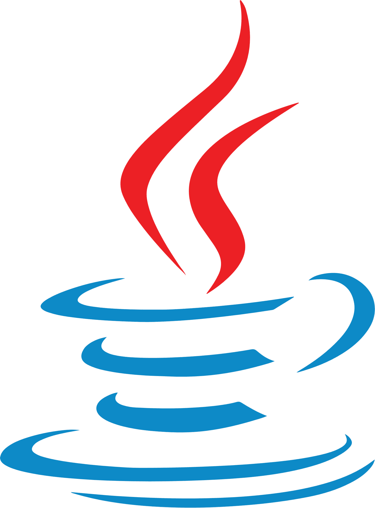
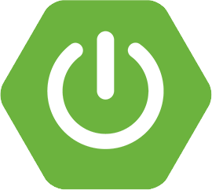
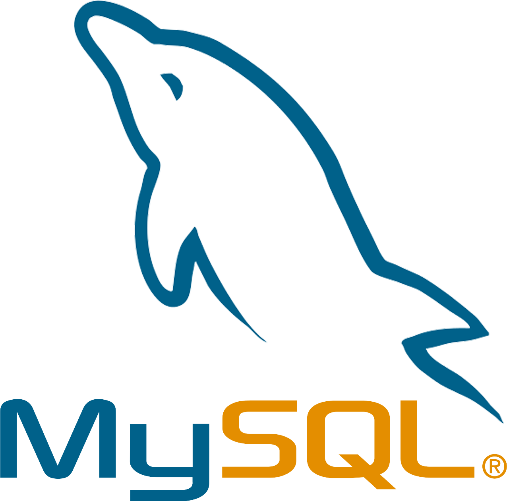
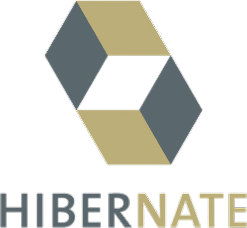
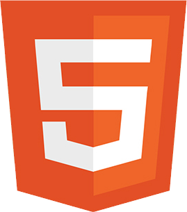
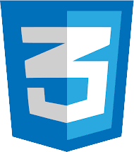
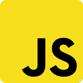
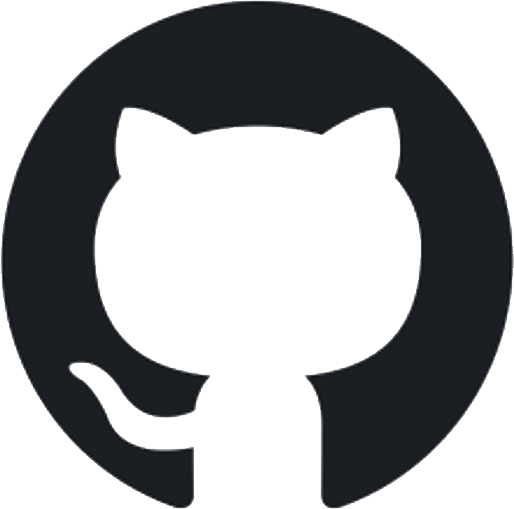

About.
Skill.
Project.
Contact.
신입 백엔드 개발자
김주연의 포트폴리오입니다 :)
일상의 불편함을 찾고, 이를 해결하기 위한 서비스를 개발합니다
사람들에게 더 나은 환경을 제공하기 위해 언제나 한 발 앞서 생각하는 개발자가 되겠습니다
010-3109-6282
0510jian@gmail.com
백엔드

Java
- 기본 문법에 따라 코드를 작성할 수 있습니다
- OOP의 특징(추상화, 상속, 다형성, 캡슐화)에 대해 이해하고 있습니다
- 기능 단위로 함수를 분리하고 이를 재사용할 수 있습니다
- 간단한 테스트 코드를 작성할 수 있습니다

Spring Boot
- RESTful한 API를 설계할 수 있습니다
- 로그인, 회원가입, 게시글의 CRUD를
구현할 수 있습니다
- 검색, 페이징을 구현할 수 있습니다
- MVC 패턴의 동작 방식을 이해하고
구현할 수 있습니다

MySQL
- 여러 서비스의 ERD를 설계, 첨삭한 경험이 있습니다
- MySQL의 기본 문법에 따라 DB를 생성,
수정, 삭제할 수 있습니다
MyBatis
- 프로그램 코드와 DB 쿼리를 분리하여
효율적으로 관리할 수 있습니다
- 다양한 쿼리를 입력하여 DB의 데이터를
매핑할 수 있습니다

Hibernate
- 직접 모든 쿼리를 입력하지 않고 findBy, findAll 쿼리를 사용하여 간단하게 데이터를 조회할 수 있습니다.
프론트엔드

HTML
- 다양한 태그를 사용하여 구조적인
페이지 레이아웃을 구현할 수 있습니다

CSS
- 다양한 속성을 사용하여 웹페이지를
스타일링 할 수 있습니다

javascript
- 기본 문법에 따라 코드를 작성할 수 있습니다
- DOM을 사용하여 HTML 요소를 조작할 수 있습니다
- 웹페이지 내에 동적인 기능을 구현할 수 있습니다
thymeleaf
- thymeleaf 태그를 사용하여 동적 페이지를 구현할 수 있습니다
- th:if, th:each 등 thymeleaf의 조건문, 반복문을 사용할 수 있습니다
협업

Github
- Git으로 프로젝트를 관리할 수 있습니다
- fork, branch, pull request를 통해
새로운/기존의 repository의 개발에 참여할 수 있습니다
Telephone icons created by Freepik - Flaticon
 010-3109-6282
010-3109-6282 0510jian@gmail.com010-3109-62820510jian@gmail.com
0510jian@gmail.com010-3109-62820510jian@gmail.com